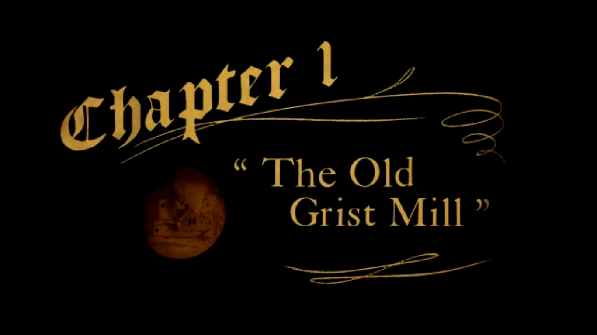
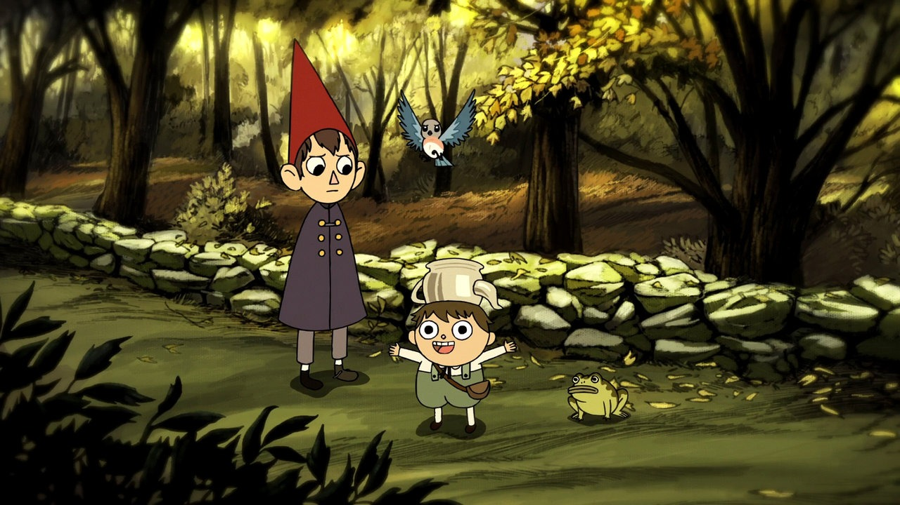
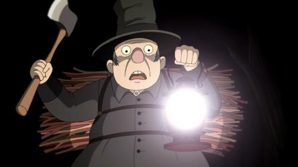
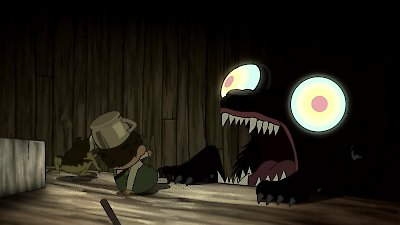
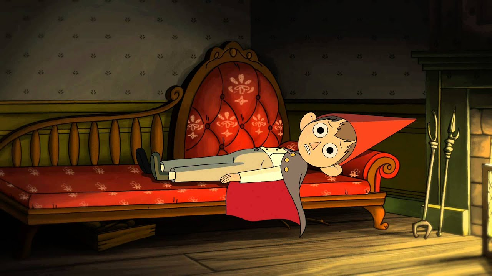
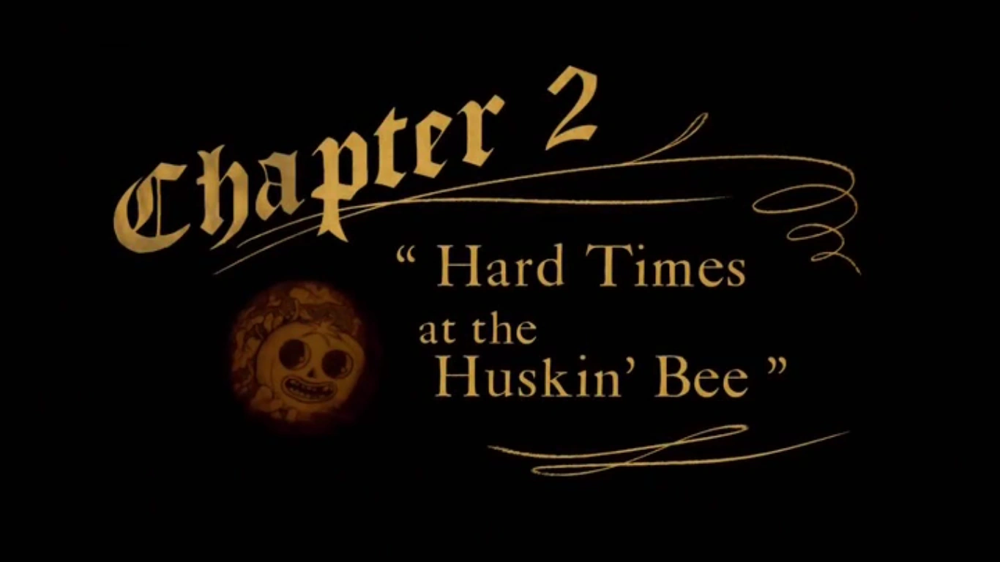
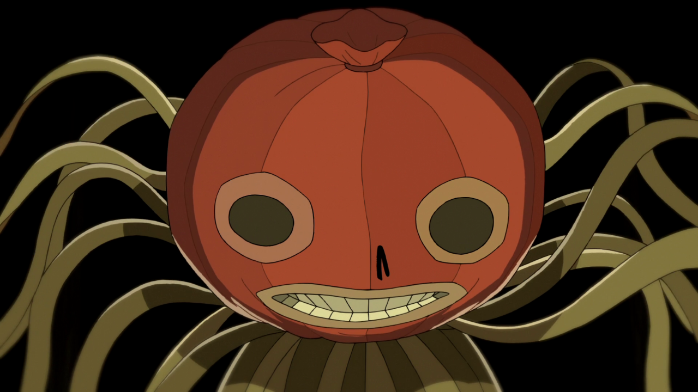
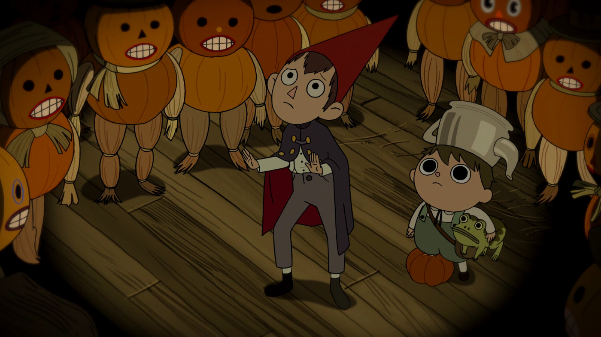
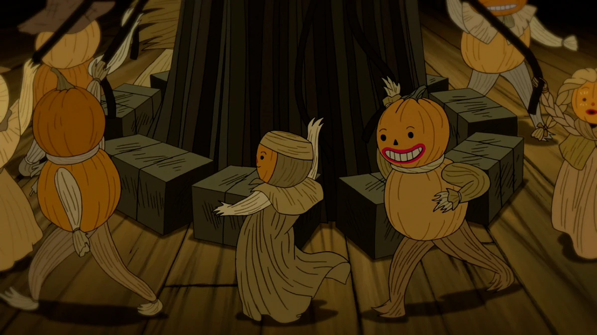
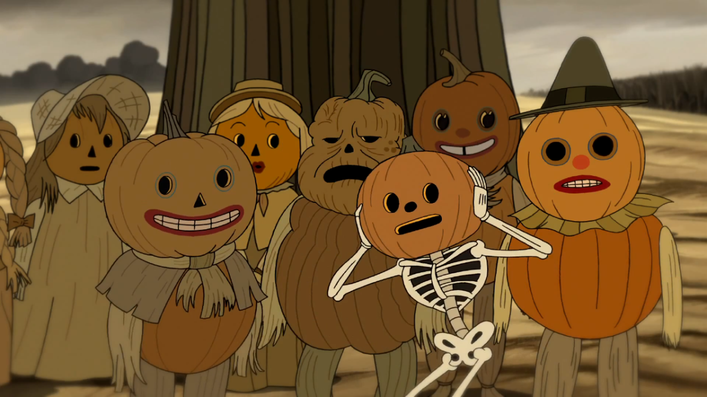

Episode 1: "The Old Grist Mill Lost in the mysterious woods of the Unknown, two brothers named Wirt and Gregory run into a jaded old woodsman. The episode begins with two boys, Greg and Wirt, wandering through a forest, with Greg holding a frog. They become lost, but encounter a woodsman who invites them into his home, telling them about a beast that roams the forest. Later, Greg and Wirt encounter the beast, and with the help of the woodsman, they manage to escape onto the roof of the mill where the woodsman works. The beast follows them, and the boys are forced to defend themselves with whatever objects they can find. They eventually escape but are left stranded on the roof with no way down. Quotes Wirt: Get that frog out of your pants. Greg: He can do what he wants. 1 / 5  2 / 5  3 / 5  4 / 5  5 / 5  ❮ ❯
Episode 2: "Hard Times at the Huskin' Bee Beatrice is saved by Greg, and in return she states that she owes him a favor. She joins them in their journey to Pottsfield. When they are there, they meet pumpkin people (supposedly costumed) but interrupt their harvest and are forced to submit to manual labor for a few hours, before leaving the town. In this episode of "Over the Garden Wall," Wirt, Greg, and Beatrice stumble upon the town of Pottsfield, where the residents are pumpkin people. After accidentally causing some trouble, they are sentenced to manual labor, which involves digging holes. They discover that the pumpkin people are actually skeletons, and they narrowly escape. The episode ends with them continuing their journey into the Unknown while the Beast laughs in the distance. Trivia An instrumental version of "Come Wayward Souls" can be heard near the end as Enoch and the others approach Wirt and Greg. This is a reference to the song's theme of despair and death. 1 / 5  2 / 5  3 / 5  4 / 5  5 / 5  ❮ ❯